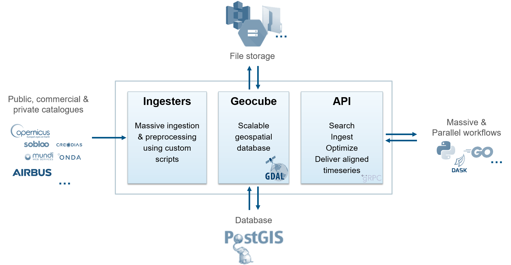

Welcome to Geocube-Server
Geocube is a geo-spatial imagery database designed as a serverless service to serve processing pipelines of satellite images at large scale.
The GeoCube is a multi-sensor spatio-temporal database, fully cloud-native, designed to provide a storage infrastructure that is scalable, distributed, able to ingest pre-processed information from a variety of earth-observation systems or external data, and to deliver consolidated, fully aligned time series at pixel or tile scale.
In order to optimize the access time to information stored into the tiles data chunks, a new format ‘Multi-dataset Cloud Optimized GeoTiff’ (MUCOG), based on the well-known COG and GeoTIFF, has been defined. The ‘Consolidation’ operation, which consists into reorganizing ingested data for optimal storage and access, is manually triggered depending on the needs of the project.
When retrieving the data, the GeoCube provides convenient on-the-fly functions such as automatic resampling, reprojection, mosaicking from the individual tiles and data type change and rescaling.
The GeoCube is designed to answer multiple needs, from global applications to more regional/local services, and is basically sensor agnostic.

Credits
Geocube is a project under development by Airbus DS Geo SA with the support of CNES.
Geocube is licensed under the Apache License, Version 2.0. See LICENSE for the full license text.